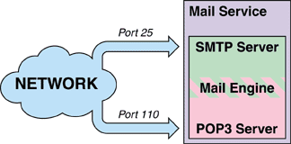
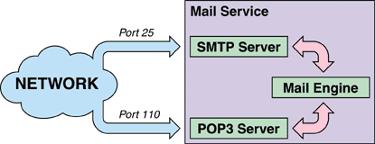
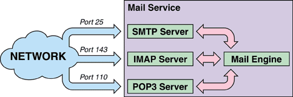

It's somehow difficult to give a proper definition of "server", due to the confusion created in the time so far by the different meanings that term had, facing the different evolution of the technologies.
The term "server" is commonly used with at least three different meanings:
-
"Server" as computer: With this meaning the
server term is intended to be the computer sharing resources.
Ex. Our corporate "server" is a double Pentium II running at 450 MHz with 12 GB of SCSI hard disk running Linux. -
"Server" as a program: With this meaning the
server term is intended to be the application that enables the
resource sharing, not caring about the network protocols it
implements.
Ex. Our Mail server is FlosieTek FTGate release 2.1 which implements the SMTP and POP3 protocols. -
"Server" as a protocol handler: With this meaning
the server term is intended to be the application that enables
the access to shared resources via a specified protocol.
Ex. Our HTTP server is Apache 1.3.4.
While we can clearly see the difference between the first definition of "server" (computer) and the other two (applications), it's hard to see the difference between the second definition ("server" as a multi-protocol handler) and the third ("server" as a single protocol handler).
Since it's crucial for all developers involved in the Avalon project to share the same common idea of "server", I would like to define a server as a protocol handler. We would, then, have HTTP servers, SMTP servers or POP3 servers, but we cannot use the term MAIL server.
What we called the mail server is in fact the union of two (or more) different "server"s (in our example the union of a SMTP and a POP3 server).
We can clearly see, anyway, that a POP3 and an SMTP server will have to share most resources and code to build up a complete mailing system, like, for example, a central repository where messages could be stored. We would then define the union of the SMTP server, the POP3 server and the central messages repository (we could call it Mail Engine) as a Mail "service". To clarify things a little bit, maybe a picture would help:
We can clearly see, however, how this approach to the problem brings to a monolithic implementation of the code, not allowing, or making really difficult, for other persons to add features, for example, integrating an IMAP server within our Mail Service.
In fact, if we don't clearly separate the code (and a good developer should always keep in mind his server expansion) adding a feature like an IMAP server into our service could become hell, and, most developers will try to find other solutions already in the market rather than using and improving what we have done.
The solution would be to have a sort of "in-core" modularization of our server.... To be continued...
 